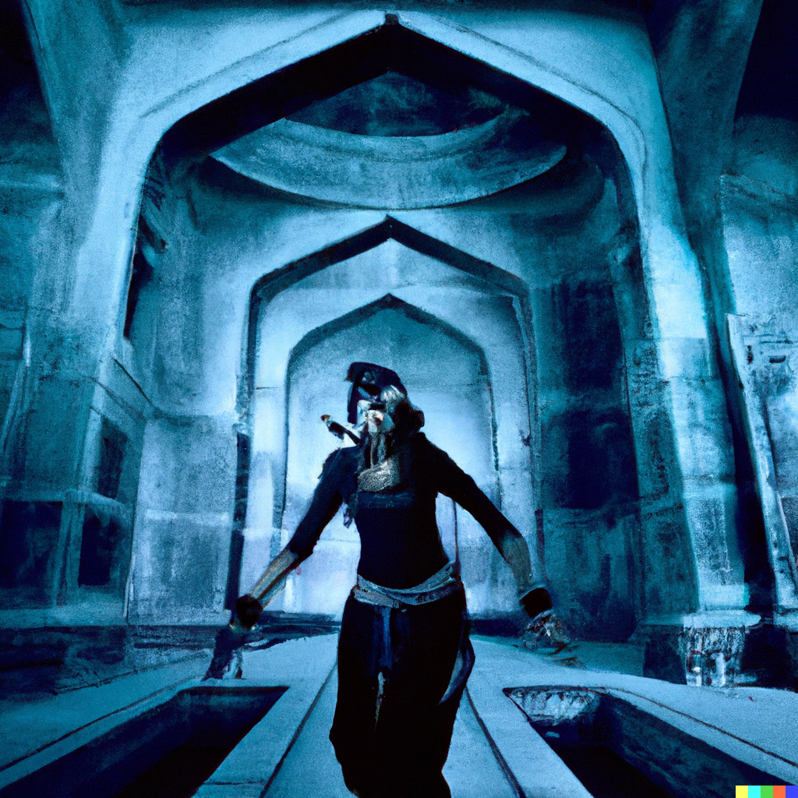
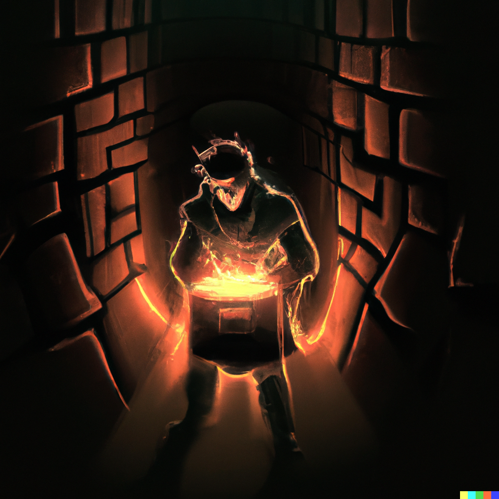
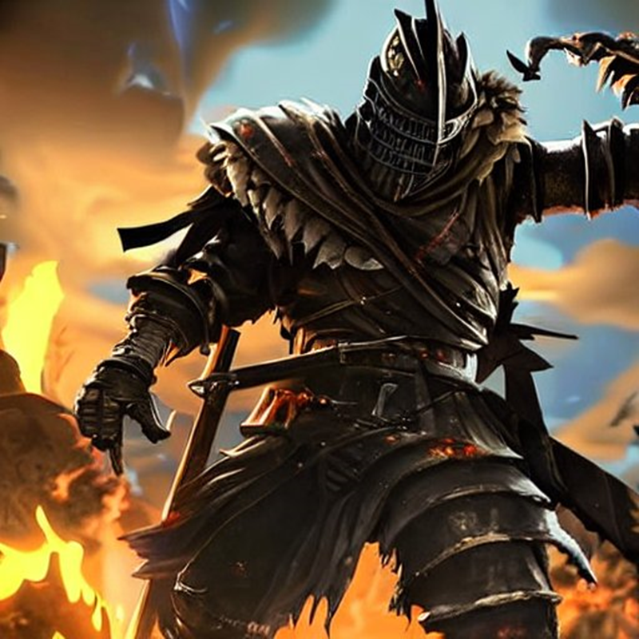

Ajpreet Singh
CONN 301
AI Creativity
April 6, 2022
Once upon a time, in the vibrant world of Fortnite, a new season dawned, bringing with it an unprecedented twist. The island was abuzz with anticipation as rumors of small atomic bombs—dubbed "Atomik Annihilators"—spread like wildfire. These tiny, yet powerful weapons promised to redefine the very fabric of battle.
As the first match of the season commenced, an electrifying tension hung in the air. Players from all around soared towards the enigmatic "Atom Alley," where the Atomik Annihilators were believed to be hidden. Battle buses roared across the sky, as players leaped out and descended upon the area, their hearts pounding with excitement and fear.
Dizzy, a skilled and daring player, was undeterred by the challenges ahead. He plunged deep into the heart of Atom Alley, navigating the labyrinthine corridors and evading the relentless pursuit of enemy players. As the storm circle closed in, Dizzy's determination only grew stronger.
After what felt like an eternity, he stumbled upon a hidden chamber containing a pulsating, otherworldly chest. As he opened it, a wave of adrenaline coursed through his veins. There they were—the Atomik Annihilators! The bombs, the size of apples and glowing with an eerie gold light, seemed to hum with unfathomable power.
Time was running out. With the storm circle tighter than ever, Dizzy unleashed the Atomik Annihilators upon his foes. Each miniature explosion sent shockwaves through the island, causing buildings to crumble and players to scatter in panic. The sheer power of these tiny bombs was beyond comprehension.
As the dust settled, only Dizzy remained standing, victorious atop a mound of debris. He had claimed the Victory Royale, forever etching his name in the annals of Fortnite history. The island, now forever changed by the legacy of the Atomik Annihilators, would serve as a testament to Dizzy's epic triumph in this unforgettable season.